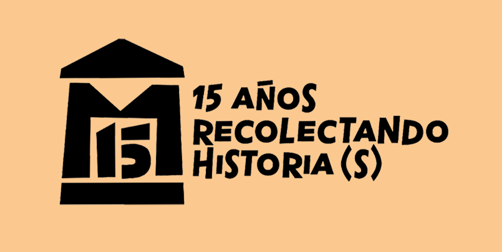
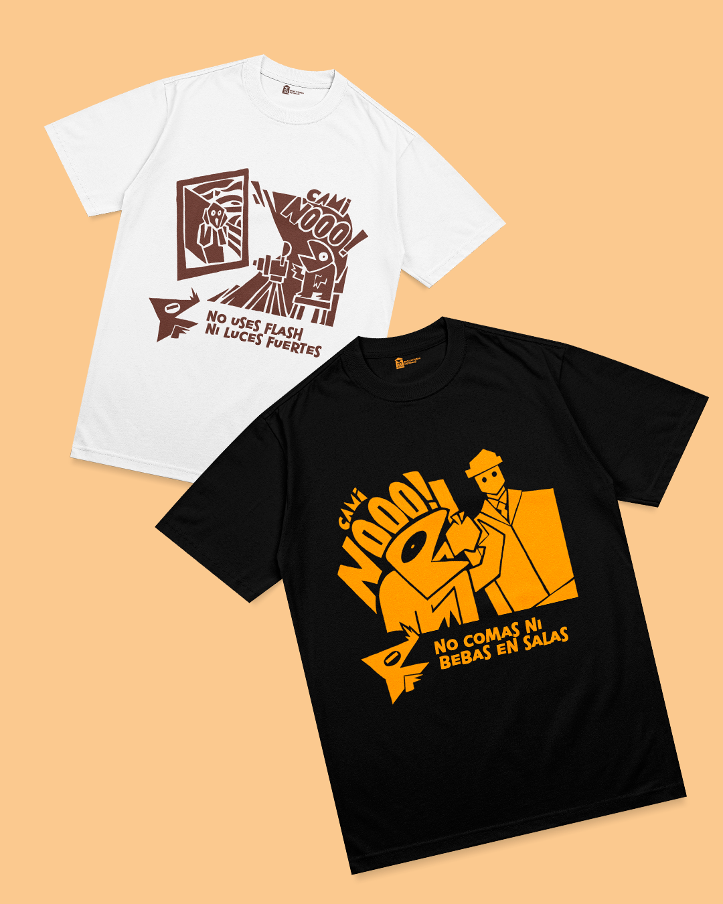
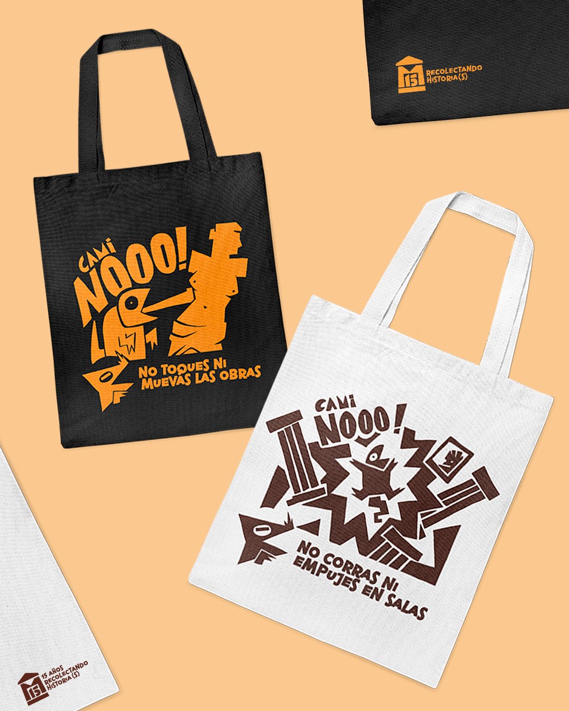
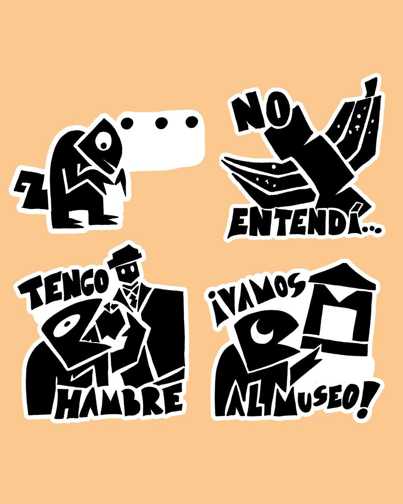
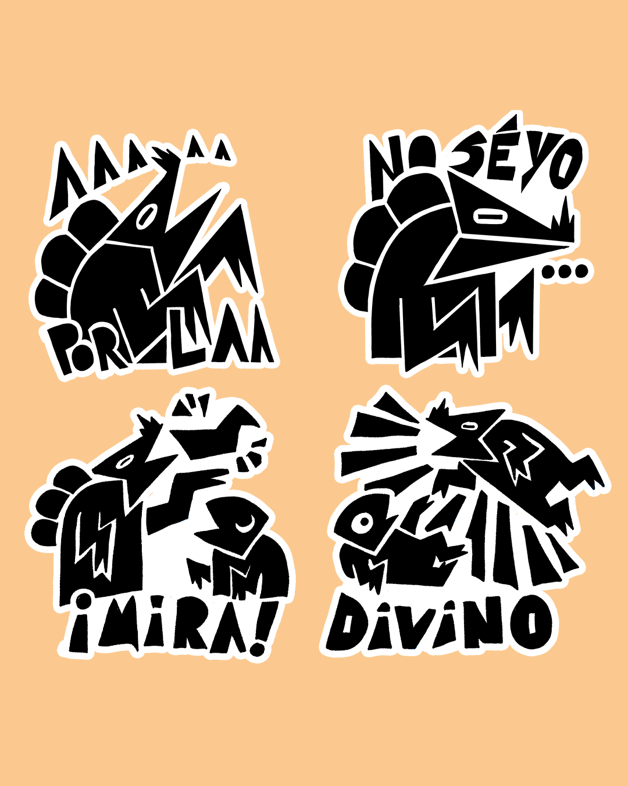

Museo de los Museos
Trabajo de exploración - Identidad de Marca
Propuesta de identidad gráfica hecha para el Museo de los Museos en su 15° aniversario,
donde se trabaja en el sistema de identidad y la comunicación gráfica en base a una
narrativa planteada bajo el concepto “Recolectando historia(s)”.
“Los museos recolectan la historia, nosotros los difundimos para que el
conocimiento
llegue a todos, es por esto que sumamos modalidades que se adapten a la realidad,
llevando la historia hacia las personas junto a una dinámica que les invite a
entretenerse y educarse.”
Con base a lo planteado se realiza un sello de 15° Aniversario basado en el
isotipo ya
establecido, una línea de merchandising que consta de: polera y tote bag inspirado en
los cuatro puntos del Manual de visitante tóxico. Un paquete de 16 stickers de whatsapp
inspiradas por aspectos del ámbito museístico
Taller de Branding: Productos y Servicios. (2026)
Colaborador: Mikael Salinas




